En este apartado damos cuenta del compromiso de la presente administración del Poder Judicial con la transparencia, el acceso a la información y la rendición de cuentas
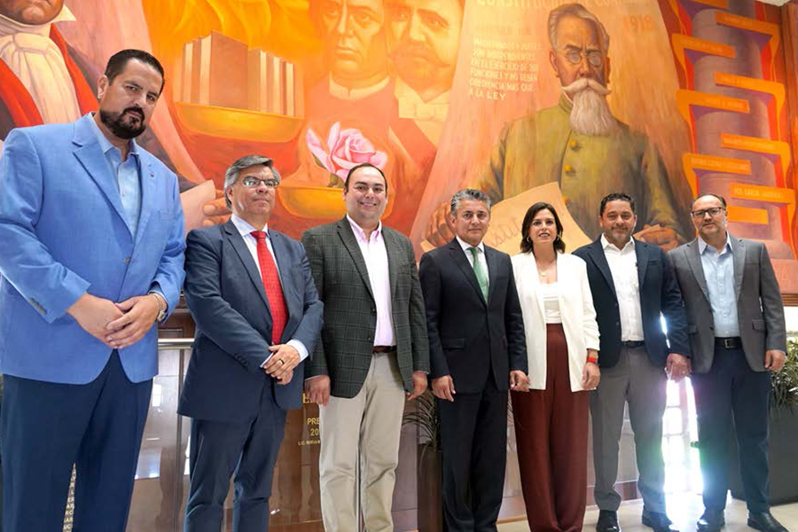
Como pilares fundamentales para una buena administración, la apertura, transparencia y rendición de cuentas, deben permear en cada una de las actividades que desempeñamos en el Poder Judicial. En este eje rector, trabajamos para afianzar la confianza de la ciudadanía en el quehacer jurisdiccional, y a su vez combatir las malas prácticas, priorizando un gobierno abierto, que mejore la impartición de justicia, permitiendo el escrutinio de la sociedad pero también su participación y colaboración.
A lo largo del presente año nos hemos caracterizado por implementar mejoras en el servicio realizado en todas las actividades, gestiones y colaboraciones encaminadas siempre a facilitar a la ciudadanía el acceso a la información y protección de datos, utilizando los procesos y herramientas implementadas por el Tribunal Superior de Justicia.
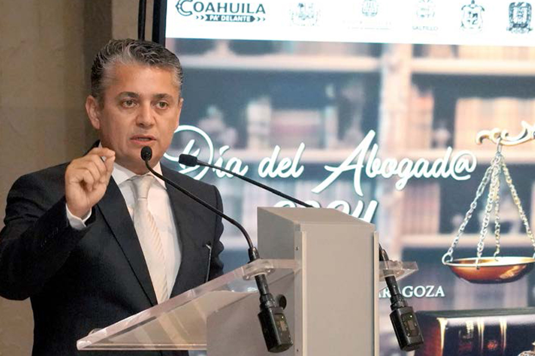
La confianza de la sociedad en nuestra institución solo se puede fortalecer si las personas tienen claro quiénes somos, qué hacemos y cómo nuestras decisiones y políticas públicas impactan directamente en su vida cotidiana, por eso vamos más allá del cumplimiento de nuestras obligaciones legales sobre transparencia y protección de datos personales; implica también una voluntad constante no solo de informar, sino también de escuchar y recibir retroalimentación, recomendaciones e iniciativas.
Para cumplir ese objetivo nos aseguramos de publicar información clara, objetiva y comprensible a través de los diversos medios de comunicación y nuestras plataformas institucionales, especialmente en las redes sociales. Además, aprovechando las plataformas tecnológicas disponibles, transmitimos en vivo las Sesiones del Pleno del Tribunal Superior de Justicia y las Salas Colegiadas, lo que permite a la ciudadanía seguir en tiempo real las decisiones judiciales que afectan su entorno. Asimismo, continuamos con la línea de WhatsApp, ofreciendo un canal directo para responder consultas y mejorar continuamente los servicios que brindamos.
Este enfoque no solo fortalece nuestra rendición de cuentas, sino que también promueve una justicia más inclusiva y participativa, en la que cada coahuilense se sienta partícipe del sistema judicial.
Transmisión de Sesiones del Pleno del Tribunal Superior de Justicia
La amplia difusión de las acciones del Poder Judicial de Coahuila por medio de la transmisión de las sesiones del Pleno del Tribunal Superior de Justicia contribuye a que la ciudadanía pueda conocer de primera mano las decisiones que se toman y acceda sin restricciones a la información. Además, promovemos, protegemos y garantizamos el derecho a la información de la ciudadanía y de involucrarse de forma participativa en el diseño, toma de decisiones e implementación de las políticas públicas, en el ejercicio del derecho de acceso a la justicia.
En 2024, transmitimos, por medio de las redes sociales institucionales y del sitio web, 49 sesiones del Pleno y dos del Tribunal Constitucional. Transmisión de Sesiones de las Salas Colegiadas
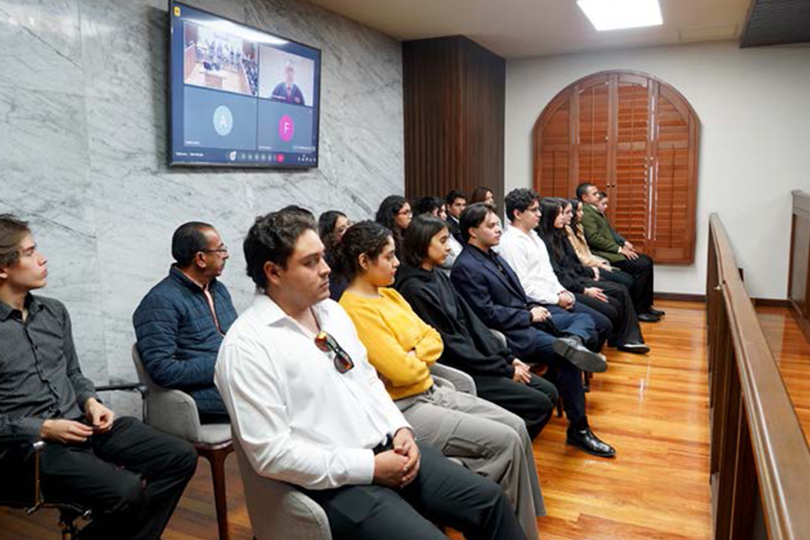
Continuando con nuestra política de gobierno abierto, y a fin de transparentar y proveer la información de los asuntos que se listan, en 2024 transmitimos las Sesiones de las Colegiadas Civil y Familiar, Penal y Regional. En este periodo que informa, difundimos 141 sesiones en vivo por medio de las redes sociales del Poder Judicial y del sitio web, en las cuales se debaten y deciden asuntos jurisdiccionales de segunda instancia.
Desahogo de Audiencias a Distancia
En el Poder Judicial de Coahuila hemos hecho uso de las herramientas tecnológicas disponibles, implementando soluciones que faciliten la cercanía de nuestra labor con todas y todos los coahuilenses.
Una de las medidas que tomamos para mejorar la impartición de justicia ha sido la realización de audiencias penales por videoconferencia, en la que todas las partes pueden participar de manera simultánea y en tiempo real. Esta modalidad, que ha sido clave en la agilización de los procesos judiciales, no solo mejora la eficiencia, sino que también facilita el acceso de las partes a la justicia, especialmente en un contexto social que demanda rapidez y adaptabilidad a las necesidades de la sociedad.
Durante 2024, celebramos seis mil 475 audiencias mediante videoconferencia, además de 352 por llamada telefónica.
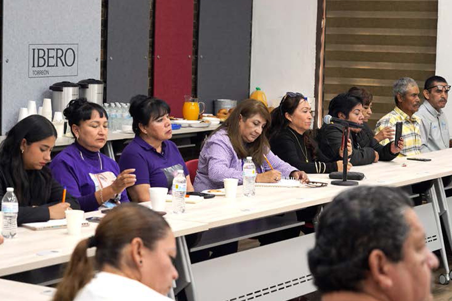
Vinculación con la Sociedad Civil
La participación de la ciudadanía es esencial para la construcción de un sistema judicial más cercano, humano y eficiente. Cuando la sociedad se involucra en la evaluación y retroalimentación de nuestra labor, no solo ofrece una mirada crítica e independiente, sino que también contribuye de manera significativa a transformar y mejorar el funcionamiento del sistema. Esta colaboración permite fortalecer la credibilidad del Poder Judicial y asegura que la administración de justicia esté más alineada con las necesidades y expectativas de la ciudadanía.
Por ello, mantenemos un compromiso firme con la coparticipación de la sociedad en la construcción de un sistema de justicia más justo y accesible. Fomentamos la colaboración entre el Poder Judicial, la ciudadanía y las organizaciones de la sociedad civil para identificar y poner en marcha acciones concretas que den respuesta a las demandas sociales y aseguren un acceso efectivo y equitativo a la justicia.
A lo largo de este año, hemos colaborado activamente con diversos sectores, como el académico y el social, con el propósito de crear un espacio de diálogo abierto y constructivo. Junto a universidades como la Universidad Iberoamericana de Torreón, la Universidad Americana del Noreste y la Universidad Autónoma de Coahuila, hemos trabajado en el desarrollo de proyectos que promuevan la investigación, la educación y la formación de profesionales comprometidos con un sistema judicial más justo.
Por cuarto año consecutivo, participamos en el Diálogo por la Justicia Penal en Coahuila, con México Evalúa y la Red Justicia Coahuila, en este espacio dimos seguimiento a compromisos para el avance permanente en la gestión procesal en nuestro estado.
Siguiendo este camino, continuamos comprometidos en escuchar y trabajar de la mano con todos los sectores de la sociedad para garantizar una justicia más accesible, equitativa y eficiente para la ciudadanía coahuilense.
Diálogo con Barras, Colegios y Foros de Abogados
La interacción constante con abogadas y abogados es fundamental, ya que ellos no solo son actores clave dentro del sistema judicial, sino que también desempeñan un papel esencial en afinar los mecanismos que permiten una administración de justicia más humana y ajustada a las necesidades sociales. Por ello, las reuniones con los profesionales del derecho se consolidan como una herramienta estratégica para la mejora continua, con miras al fortalecimiento de nuestro modelo de justicia.
Con el objetivo de fortalecer los lazos de colaboración y compartir conocimientos y experiencias que enriquezcan nuestra función jurisdiccional, este año llevamos a cabo diversas reuniones con las barras, foros y colegios de abogados y notarios de las principales ciudades del estado. Estos encuentros no solo nos permitieron intercambiar ideas sobre las mejores prácticas en el ejercicio del derecho, sino también identificar áreas de oportunidad para mejorar de manera conjunta los procesos judiciales y administrativos, garantizando así una justicia más pronta, eficiente y transparente.
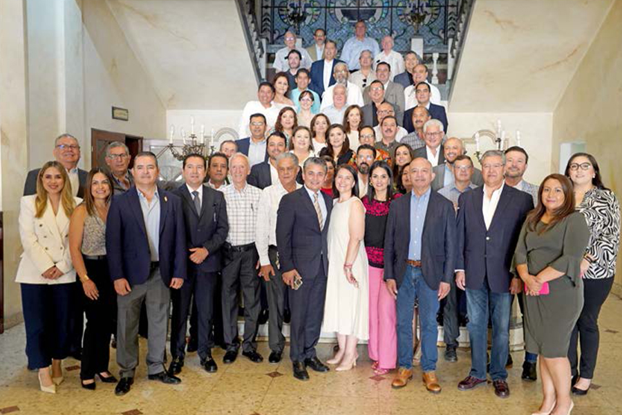
Líneade Atención a Usuarios por WhatsApp
Aprovechando los recursos tecnológicos, seguimos acercando nuestros servicios a cada rincón del estado, y por medio de WhatsApp en la línea 844 506 0075, la ciudadanía puede solicitar orientación en los diversos trámites que puede realizar en el Poder Judicial de Coahuila.
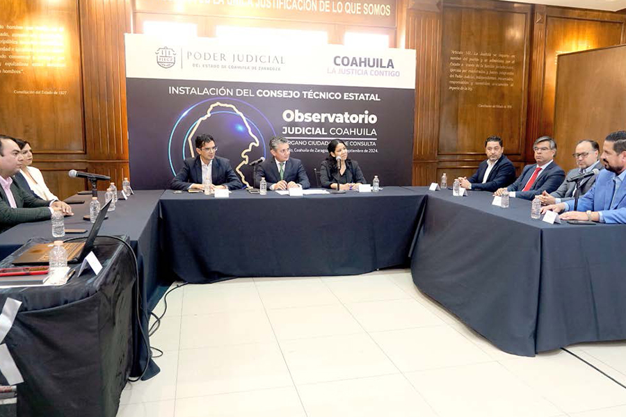
En este período que se informa, dimos respuesta a tres mil personas usuarias, lo que se ve reflejado en la confianza y cercanía de la ciudadanía con este poder público.
Observatorio Judicial
El Observatorio Judicial del Poder Judicial del Estado de Coahuila de Zaragoza es un órgano ciudadano de consulta y apoyo, adscrito a la Presidencia del Tribunal Superior de Justicia. Fue creado en 2017 con el objetivo de supervisar y vigilar el funcionamiento de los órganos jurisdiccionales y no jurisdiccionales, identificando problemáticas y proponiendo mejoras que contribuyan al fortalecimiento del sistema judicial.
Este organismo se integra por tres componentes principales: el Consejo Técnico Estatal, encargado de formular estrategias y recomendaciones; los Capítulos Regionales, que aseguran la supervisión en los distintos distritos judiciales; y los Observadores Ciudadanos, quienes representan a la sociedad civil y participan activamente en la evaluación y propuestas para la mejora continua de la administración de justicia.
El pasado 25 de septiembre se renovó el Consejo Técnico Estatal del Observatorio Judicial, instalándose ante la presencia de Magistraturas, académicos, representantes y organizaciones de la sociedad civil. Este Consejo está conformado por representantes de la academia, sociedad civil y especialistas jurídicos, cuya experiencia y conocimiento reflejan una visión ciudadana.
Participación y Vinculación Ciudadana
Con la ayuda del Observatorio hemos fomentado espacios para la participación ciudadana al desarrollar consultas para evaluar el desempeño del sistema judicial e integrar recomendaciones, y realizamos una Encuesta de Satisfacción, dirigida a las personas usuarias de los servicios que ofrece este Poder Judicial a la ciudadanía. Asimismo, sistematizamos la labor del Observador Ciudadano, con el fin de incrementar la cobertura para observar los procesos jurisdiccionales, y establecimos órganos locales del observatorio judicial, para ampliar el alcance y la cobertura en los Distritos Judiciales.
Participamos en la revisión de la actualización del Código de Ética y Conducta, que establece principios de imparcialidad, transparencia y honestidad, y presentamos el modelo del Observatorio Judicial de Coahuila como instancia generadora de políticas públicas en conjunto con la sociedad civil, en el Primer Intercambio de Experiencias sobre la Participación Empresarial en temas de Justicia y Seguridad Ciudadana.
Supervisión y evaluación del Sistema Judicial
Durante el 2024, en el Observatorio Judicial desarrollamos un sistema de monitoreo, el cual consiste en la implementación de indicadores para medir la percepción ciudadana sobre el sistema de justicia, así como del desempeño del sistema penal y la resolución de conflictos.
Colaboramos en procesos de evaluación y capacitación del personal judicial, particularmente en competencias técnicas y éticas, a la par de que recibimos asistencia técnica por parte de ConJusticia – Inteligencia Pública, para la instalación del Observatorio Judicial Estatal.
Finalmente, a través de la figura de observadores ciudadanos, buscamos el fortalecimiento institucional, la transparencia y el acercamiento del Poder Judicial a la sociedad, bajo los principios de la justicia abierta, y durante el segundo semestre de 2024 se presenciaron 263 audiencias.
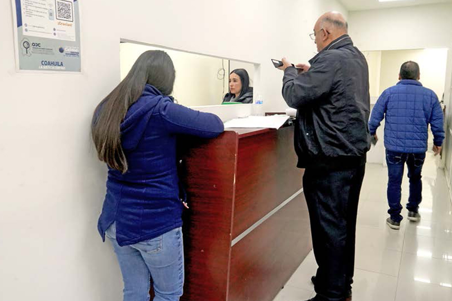
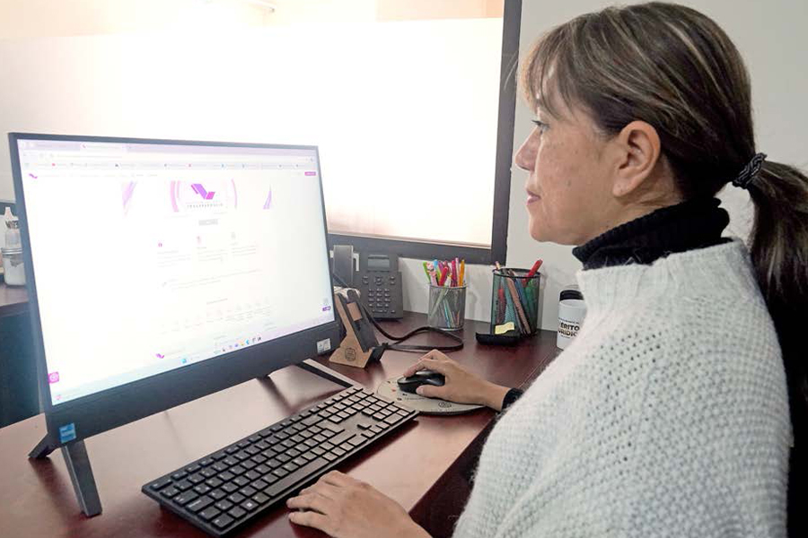
Atención a Solicitudes de Acceso a la Información
Desde la implementación del Modelo de Justicia de Coahuila hemos fijado los términos y condiciones para impulsar el desarrollo de la justicia a partir de la consolidación de una institución transparente, que garantice procesos legales capaces de resolver conflictos con imparcialidad, debido proceso y equidad.
Hemos fortalecido la transparencia y la rendición de cuentas en cada una de nuestras acciones, permitiendo a la sociedad percibir con claridad que el Poder Judicial de Coahuila es una institución firme, comprometida con la defensa del Estado de derecho y la paz social.
Ante los desafíos que se enfrentan en materia de transparencia, y la inminente reforma que plantea una reestructuración en la forma de ejercer el derecho de acceso a la información, el proceso constante de fortalecimiento en este rubro, ha permitido al Poder Judicial reforzar la divulgación de información pública y estadística de manera proactiva, que permita a toda persona conocer más sobre el quehacer jurisdiccional.
Durante este 2024, en el Poder Judicial seguimos avanzando en la digitalización y utilización de las tecnologías para garantizar que el acceso a la información no solo cumpla con las normas legales, sino también se ajuste a las expectativas y necesidades de la sociedad.
Fortalecer los mecanismos de acceso a la información, a través de las diversas publicaciones en nuestro Portal web, contribuye, sin duda, a que las personas tengan acceso a la información de su interés y ejerzan efectivamente sus derechos, garantizando que el Poder Judicial siga siendo una institución abierta y confiable.
A través de las unidades de atención del Tribunal Superior de Justicia y del Tribunal de Conciliación y Arbitraje, se ha facilitado a la ciudadanía el acceso a la información en temas relacionados con los procesos judiciales, la estructura de la organización, presupuesto, servidores públicos, estadística, entre otros, mejorando la calidad de las respuestas otorgadas y velando por la entrega de información clara, accesible y útil para las y los solicitantes, asegurando en todo momento la entrega de respuesta en tiempo y forma, conforme a lo dispuesto por la ley y garantizando la protección de sus datos personales.
Durante el periodo que se informa se atendieron 324 solicitudes de acceso a la información, dando contestación con ello a más de mil 943 cuestionamientos planteados en ejercicio de este derecho.
Información Pública de Oficio del Poder Judicial
En el Poder Judicial estamos comprometidos con garantizar el derecho de acceso a la información pública, promoviendo la transparencia, la rendición de cuentas y los principios de gobierno abierto. Para ello, adoptamos procesos innovadores, herramientas tecnológicas y metodologías que aseguran la publicación de nuestras obligaciones de transparencia en formatos accesibles y acordes con la legislación aplicable.
Uno de los pilares fundamentales de la Ley de Acceso a la Información Pública para el Estado de Coahuila de Zaragoza es la información pública de oficio. Este concepto abarca todos aquellos datos y documentos que las instituciones gubernamentales deben divulgar de manera periódica, sin que sea necesario que los ciudadanos los soliciten.
Durante el año 2024, nuestra institución fue evaluada trimestralmente por el Instituto Coahuilense de Acceso a la Información Pública (ICAI). Tanto el Poder Judicial como el Tribunal de Conciliación y Arbitraje lograron una calificación del 99.81% en el cumplimiento de las obligaciones establecidas por la legislación local en materia de transparencia.
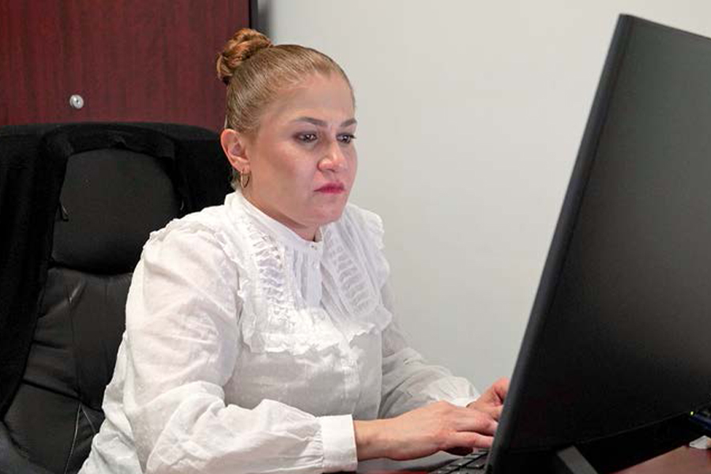
Este resultado refleja nuestro firme compromiso con la transparencia y la rendición de cuentas. Hemos cumplido de manera integral con los requerimientos legales, proporcionando a la ciudadanía información accesible, clara y completa. Esto fortalece la confianza pública y consolida una relación transparente y responsable con la sociedad a la que servimos.
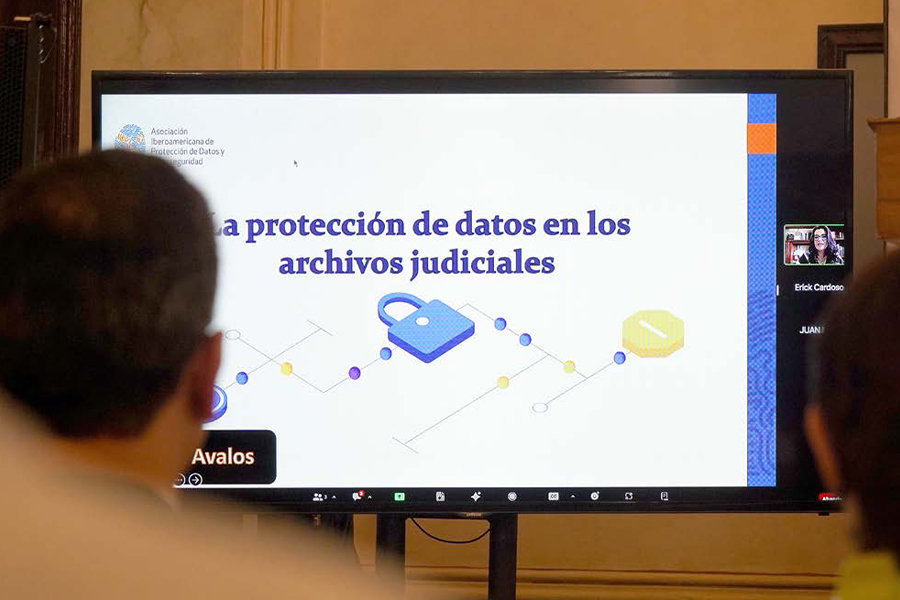
Transparencia Proactiva
Para consolidar el modelo de justicia abierta que favorezca el conocimiento público de las actividades realizadas, la confianza de la ciudadanía, el fortalecimiento de la institución y la participación y colaboración de la sociedad coahuilense en la toma de decisiones, durante el 2024 dirigimos importantes esfuerzos para generar información que trasciende las obligaciones de transparencia, pero responde a las principales consultas ciudadanas en el desarrollo de la función jurisdiccional, para que esté disponible para su consulta.
Nuestro sitio web es una importante herramienta para transparentar el trabajo desarrollado en el Poder Judicial, por lo cual realizamos actualizaciones periódicas a distintos apartados como los relacionados con información relativa a presupuesto, estadística sobre divorcios, principales asuntos familiares, feminicidios, declaraciones de ausencia, versión pública de sentencias, y el uso de herramientas digitales.
COMUNICACIÓN Y DIFUSIÓN
Mantener la información constante e inmediata es uno de los objetivos primordiales para el Tribunal Superior de Justicia del Estado, es así que fortaleciendo los vínculos con la sociedad y los medios de comunicación es como se da certeza a nuestras decisiones y acciones, por lo que la ciudadanía puede dar cuenta de la garantía de la impartición de la justicia en el estado.
Con el fin de mantener una sociedad informada, difundimos boletines y comunicados de prensa y continuamos con la campaña de contenidos con lenguaje sencillo, incluyente y cercano. Todo ello respetando y priorizando los derechos humanos, y manteniendo el objetivo de dar a conocer la importancia de la labor de este Poder Judicial. Las redes sociales siguen siendo el medio de comunicación más accesible para la ciudadanía, por ello, generamos contenido de interés para las diversas audiencias a las que nos dirigimos por las cuentas oficiales de Facebook, Instagram y “X” (antes Twitter).
Durante los 16 días de activismo del “Día Internacional de la Eliminación de la Violencia Contra la Mujer”, por medio de nuestras redes sociales, implementamos la campaña “Aunque sean solo palabras, también es violencia” en la que dimos ejemplos de frases que normalizan la violencia en razón de género, generamos conciencia sobre ésta y sus diferentes tipos, incentivando el respeto al derecho de una vida libre de violencia.
Con la finalidad de lograr una cobertura total del estado, teniendo en la mira llegar a cada rincón, continuamos trabajando de la mano con Coahuila Radio, y por séptimo año consecutivo, llegamos a los 38 municipios con el programa Poder Judicial Al Aire, con la transmisión de dos episodios por semana con una duración de 30 minutos cada uno. Este recurso nos permite dar a conocer temas de interés común en materia jurídica desde la voz de diferentes expertos de la impartición de justicia, informar sobre nuestra labor diaria, los trámites y servicios que ofrecemos, y lograr un vínculo cercano con las personas justiciables.
Promoción y Difusión de los Medios Alternos de Solución de Controversias
Durante este año, como parte de la difusión y promoción de la cultura de la paz, mediante el Centro de Medios Alternos de Solución de Controversias, participamos en diferentes programas de medios de comunicación estatales como RCG y Radio Universidad de la Universidad Autónoma de Coahuila.
A través de nuestra participación buscamos informar y sensibilizar a la ciudadanía sobre los mecanismos alternativos de resolución de conflictos que ofrecemos, fomentar una justicia más cercana, accesible y pacífica para todas las personas, contribuyendo así al bienestar y la armonía social.
En 2024 tuvimos 87 apariciones en radio, en el programa MASC Justicia con 38 emisiones, 43 en La Noticia en Rojo, y colaboramos en seis programas de Poder Judicial al Aire.
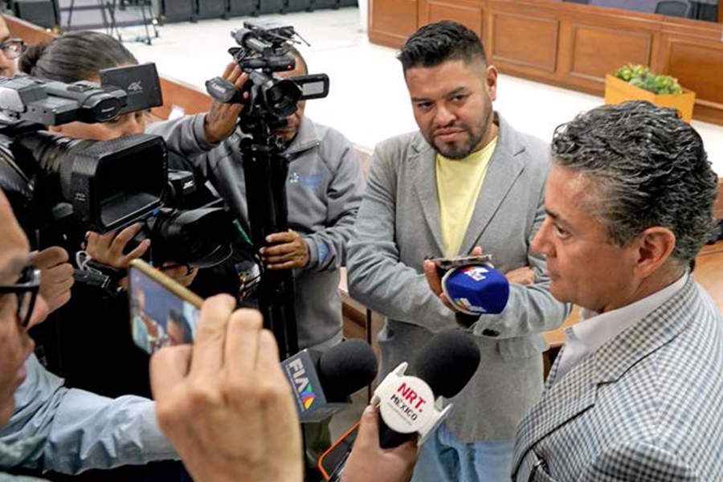
PROMOCIÓN Y DIFUSIÓN DEL INSTITUTO ESTATAL DE DEFENSORÍA PÚBLICA
A fin de visibilizar las actividades desempeñadas por el Instituto Estatal de Defensoría Pública, intensificamos la difusión de información de interés para la sociedad a través de distintos medios de comunicación, realizamos campañas de orientación en materia de protección y defensa de derechos, y dimos respuesta a mensajes y llamadas en donde se nos plantearon problemáticas y situaciones por parte las personas usuarias.
A lo largo de este período realizamos 209 divulgaciones en redes sociales, en las que proporcionamos información sobre nuestras actividades y servicios, además dimos contestación a ocho mil 598 mensajes de las y los usuarios, lo que refleja el compromiso y la confianza que la sociedad coahuilense deposita en nuestra función.
Asimismo, en el año que informamos, Radio Universidad y RCG nos brindaron un espacio para conversar con su audiencia sobre diversos temas legales, destacamos nuestra participación en La Noticia en Rojo; En confianza, con Pablo Garduño; en Poder Judicial al Aire; y Acceso Tv, por lo que hemos participado en 104 programas de radio y televisión.